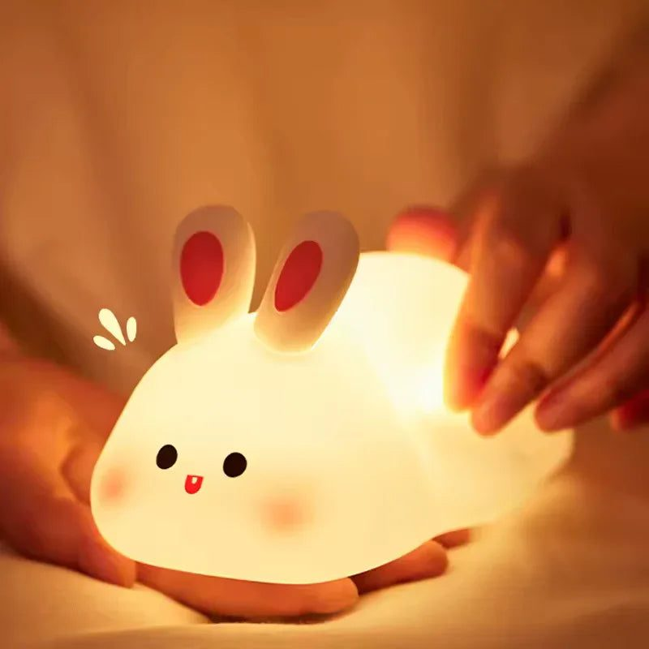

"Ammi, light on rehne do." Almost every parent has heard this at bedtime. Fear of the dark is a normal part of childhood, usually peaking between the ages of three and eight. In Pakistani homes, sudden load-shedding in the middle of the night can make it worse, as the room goes completely black. A soft night lamp is a simple, comforting solution. It gives children enough light to feel safe without disturbing their sleep, and it helps parents during night feeds and checks.
Why soft light matters
Bright white light at night signals to the brain that it is daytime, which can make it harder for children to fall asleep. A night lamp should give a dim, warm glow rather than strong light. Warm yellow, amber or soft orange tones are gentler than blue or bright white. Many lamps offer adjustable brightness, letting you set a soft glow for sleeping and a brighter level for reading a bedtime story.
Why silicone lamps are popular
Silicone night lamps have become a favourite for children's rooms, and for good reasons:
- Silicone is soft and squishy, so it is safe if dropped or bumped
- Many lamps turn on and off with a gentle tap, easy for small hands
- The material stays cool to touch, unlike old bulbs
- Cute shapes like pandas, rabbits, pumpkins and moons make children want to keep them close
Because they are soft, children often treat them like a toy or a bedtime companion.
Rechargeable for load-shedding
In Pakistan, choose a rechargeable lamp. A lamp that runs on a built-in battery keeps glowing during load-shedding, which is precisely when a child is most likely to wake up frightened. Charge it during the day via USB, and it can last through the night on a low setting. Check the battery life before buying, and avoid lamps that need to stay plugged in.

Safety checks for parents
When choosing a lamp for a child's room, look for:
- No small parts that can come loose and be swallowed
- A sealed battery compartment
- A charging cable that can be removed and stored away at night
- Stable shape that does not easily roll off the bed or table
Place the lamp on a bedside table or shelf, not inside the bed, and keep cables away from cots.
Building a bedtime routine
A night lamp works best as part of a calm routine. Dim the main lights half an hour before bedtime. Switch off screens, read a story or recite a short dua together, then turn on the night lamp as the main light goes off. Over time, the soft glow becomes a signal that it is time to sleep. Many parents find that a lamp the child chose themselves is especially comforting.
Helping with fears
A lamp helps, but talking helps too. Ask your child what scares them, and reassure them without dismissing their feelings. Avoid scary stories or dramas before bed. Praise them when they sleep through the night. As they grow more confident, you can gradually lower the brightness.
Useful for parents too
Night lamps are not only for children. New parents use them for night feeds and nappy changes without fully waking the baby. Elderly family members appreciate a soft light on the way to the bathroom at night. A lamp in the corridor reduces trips and falls.
Gifts children love
Cute silicone lamps make lovely gifts for birthdays, Eid or a new baby. Choose a shape that matches the child's interests, such as an animal, a moon or a cartoon-inspired design, and pair it with a storybook for a thoughtful present.
Night lamps and the bedroom layout
Where you place the lamp matters as much as which lamp you buy. Keep it slightly away from the child's direct line of sight, so the glow fills the room without shining in their eyes. A low shelf or bedside table works well. In shared bedrooms, a lamp between two beds serves both children, and siblings can take turns choosing the colour each night.
Find a gentle lamp
You can explore panda, rabbit, pumpkin and other cute silicone night lights at https://www.trenducts.pk/collections/silicone-lamps, with delivery anywhere in Pakistan. A soft glow at bedtime can turn a nightly struggle into peaceful sleep.